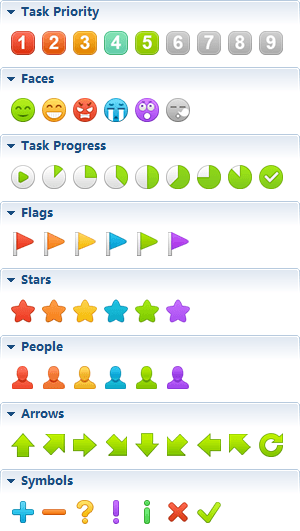
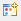
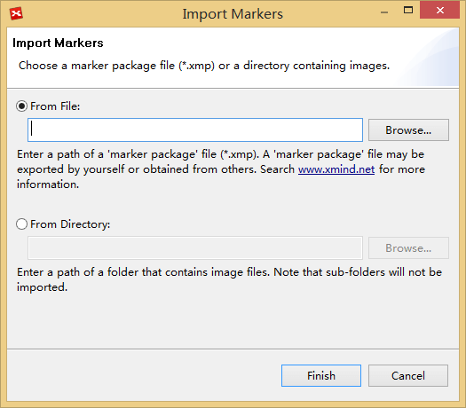
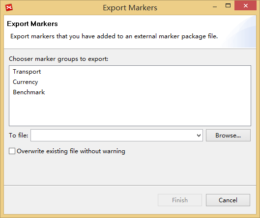

Marker
Markers are image icons used to represent special meanings on a map, and are widely used in project management, planning, and other organizational activities. They can enrich and beautify your mind map. Also, importing your own markers, and sharing them with others are also avaialble.
To add a marker(s):- Select the topic(s).
- Open the Markers Window by clicking "Window - Marker" from the menu.
- Click the marker you want to add to your map.
- This marker will be added into selected topic(s).

To delete existing marker:
- Select the topic.
- Right-click the marker with your mouse and select 'delete'.
To import markers by icons:
- Open the Markers Window.
- Click 'Marker Manager' icon  in the dropdown menu at the upper right of the window.
- Click 'Add' beside 'Marker groups' field, and name the new group.
- Select the new marker group, click 'Add' beside 'Markers' field.
- Select the image(s) you need, name it, and click 'open' to add into XMind.
- Click 'Apply'.

To import markers by folder
- Open Markers Window, and click "Import Marker Group" at the upper right of the window.
- You can now import Marker Group file('.xmp') or local images from the selected folder.
- Click "Finish".

To Export your own marker group- Open Markers Window, and click the "Export Marker Group" in the view toolbar.
- Select "Marker Groups"
- Select save path, and click "Finish"

Notes: you can uss the legend to describe the markers.